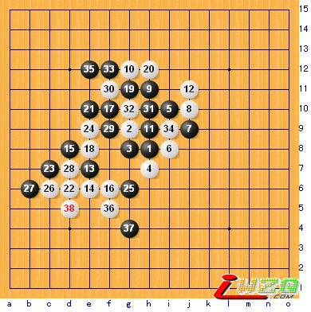
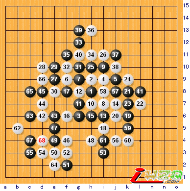

江南评棋
#1 江南评棋 作者：有志青年 发表时间：2007-4-9 16:23:18
【有志注】自从爱五子棋网的五子棋谱库开始大量收录棋谱开始，就受到很多五子棋爱好者的关注，不少爱好者对棋谱库中的棋谱进行了点评，江南新绿就是其中一位，现摘取部分棋枰转发于此，更多，请关注五子棋棋谱库。
#2 Re:江南评棋 作者：有志青年 发表时间：2007-4-9 16:59:49

执黑林曦 执白沈金峰
原谱地址：qplist.asp?qpid=365&menu=4&returnmenu=6
江南新绿2007年3月评述，13是比较奇怪的做棋方法。但黑棋优势很大，14走13右边看起来要强一点。15，17，19是非常强的进攻手段。18和20防守的都不错，也很到位。21？？？也许黑棋没有找到进攻办法，似是而非的走了一步，期待白棋犯错。22=25速胜，但实战也不错，之后就定型了，黑棋的空间优势在减弱。34疑问手，但不明显。35？？应该做杀，但没有vcf。35=d12强，之后有37=b10的手段。白棋抓住了最后的机会。
#3 Re:Re:江南评棋 作者：有志青年 发表时间：2007-4-9 17:02:00

执 黑Ants 执 白奈良秀树
原谱地址：qplist.asp?qpid=557&menu=4&returnmenu=6
江南新绿2007年4月评述，在这次比赛上不止一次的看到奈良秀树使用这个6了。9手也是不错的想法，因为5和9白棋通常不会去防守，那么留下一个活二也很有利。11，13简明优势，但14是意外的一手，也是本局的胜负手，ants没有等闲视之，利用连续的进攻化解了白棋潜在的优势，19，21为左上作杀做好准备.25进攻方式单调,如果没有25和26,直接,27,29,31,白棋也同样只有28,30,32这几个位置可以选.以下做死白棋应该说是有可能的.奈良秀树的运气不错.